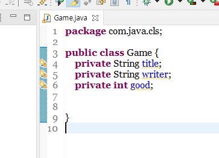
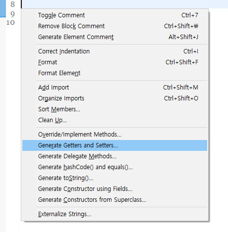
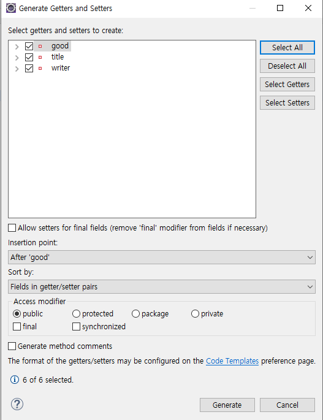
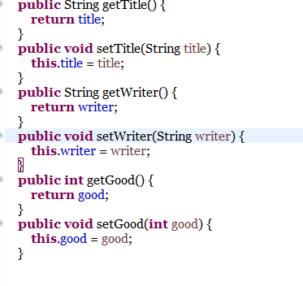
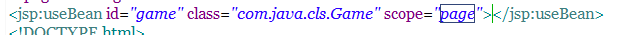
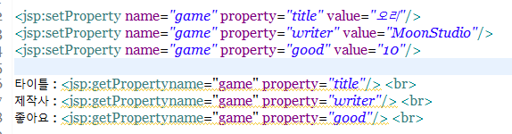
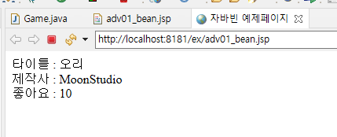

1
-

자바 빈은 자바의 클래스 객체를 JSP파일 내부에서 사용할 수 있도록 하는 액션태그의 일종입니다.
해당 기능을 사용하기 위해 먼저, 자바 클래스 객체를 하나 생성해줍니다.
-

alt + shift + s 버튼을 눌러서 위와같은 창을 열고, getter와 setter 추가 창을 엽니다.
-

객체의 모든 값의 getter와 setter메소드를 추가해줍니다.
-

각 getter와 setter들이 추가된것을 확인할 수 있습니다.
-

다음으로, 실습을 위해 JSP파일을 생성하여 위와같은 액션태그를 작성합니다.
id값은 자유롭게 설정하며, class는 생성한 클래스의 경로를 작성합니다.
마지막으로 scope는 해당 자바빈의 사용 범위로, page, request, session, application 등 옵션이 존재합니다.
-

그리고 나서 위와같이 해당 자바빈의 값을 setProperty로 설정해주고,
getProperty를 사용하여 해당 적용한 값을 불러와 출력하도록 합니다.
-

해당 JSP 파일을 실행하면 정상적으로 적용값이 출력되는 것을 확인할 수 있습니다.